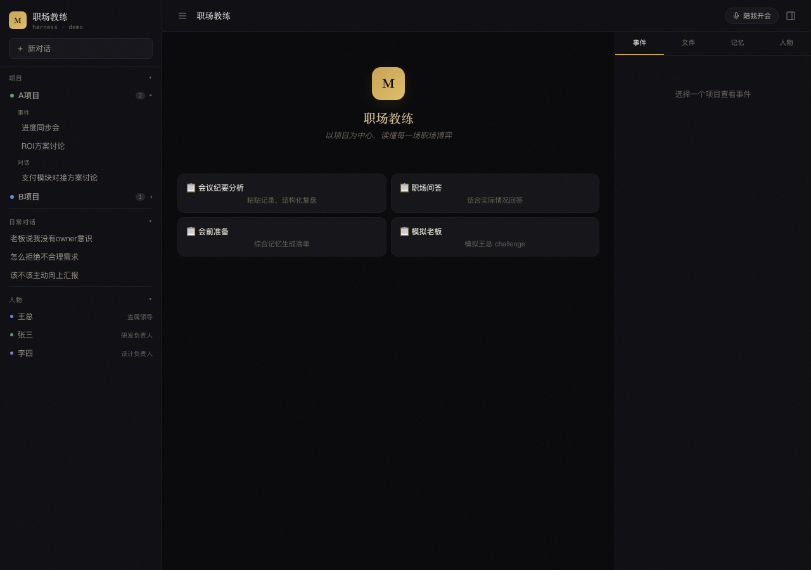

READROOM · 产品构想
ReadRoom：职场小白必装的 1 个 AI 导师
空格的键盘
前两天晚上，一个在心里放了很久的念头，终于长成了一个完整的产品。
说实话，这个念头源于我工作这些年最真实的感觉：忙忙碌碌，回头看，带不走什么。
我想做一个 AI 职场导师。
工作这些年，一直没人带。
会开了一堆，活干了一堆。但每件事都是执行——没人告诉我，哪次汇报其实搞砸了，哪个判断其实很幼稚。
悟出来了，是运气。悟不出来，就在原地转圈。
原型已经能跑了。给大家提供一些我的玩法。

ReadRoom 原型，本地跑起来的样子
玩法一：TA 有记忆。
它记得我的直属领导王总：结果导向，风险敏感。不喜欢频繁 IM 催促，更接受带方案当面确认。
同样问"要不要催领导"，看看两边怎么答——
通用大模型 视情况，注意语气。
TA 别发"王总这个看了吗"，直接把 A、B 两个方案和推荐一起发过去。
通用大模型 （TA 不知道王总是谁）
相同的问题，不同的答案。
玩法二：会议教练。
下午要跟老板汇报项目，我跟它说一声，它汇总项目历史和老板的关注点，给我一张作战卡，上面列好了老板可能会问什么、我上次在哪里卡壳、开场先说什么。
开会的时候，它安静听，只在关键节点提醒——
TA 老板在追问时间，直接给日期。
TA 对方问的是"为什么延期"，别再铺垫项目背景。
会开完了，它会根据我的表现，告诉我哪里有问题——
TA 老板问"什么时候上线"，我用了 47 秒解释背景，最后没给出日期。
玩法三：模拟职场。
它扮演老板来拷问我，题目是汇报"项目要延期一周"。我刚汇报完，它就开口——
TA 这个项目为什么延期？
我 需求方中途改了两次方向，加上测试同学请了三天假，联调时间被压没了……
TA 这些原因我都知道。我问的是，为什么没有提前发现？
我 风险我在周报里提过一次，但没有单独跟您同步……
TA 所以，作为 owner，到底承担了什么责任？
三轮追问下来，我一句都接不上。
然后它复盘：最大的问题，我一直在解释原因。承担责任、给出方案，一句都没有。
现在，重新来一次。
这三个玩法，底下是同一套记忆：它记得我的老板、我的项目、我犯过的错。用得越久，它越懂我。
职场课是看完二十节视频。这个不一样：它观察真实工作，找到短板，给出训练。有没有用，下次开会就知道。
工作本身，就是训练场。
产品拆成了六个模块，这三个是我最想先做出来的。名字起好了，叫 ReadRoom。
这个东西有没有人要，我还不知道。
你要是也想被这样追问一次，评论区说一声。